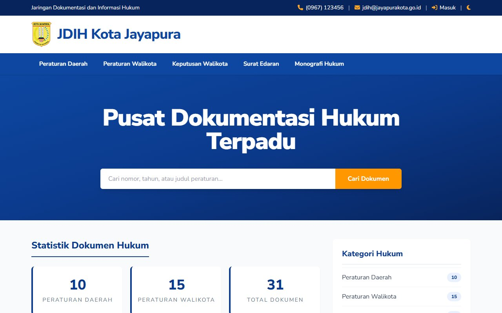
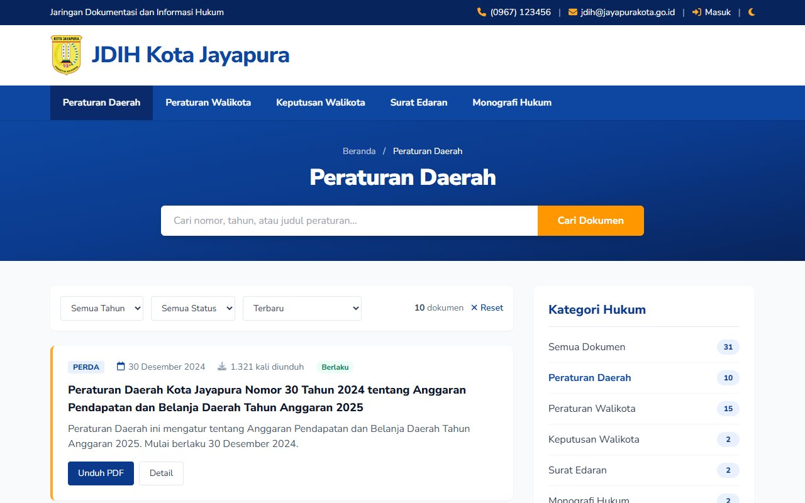
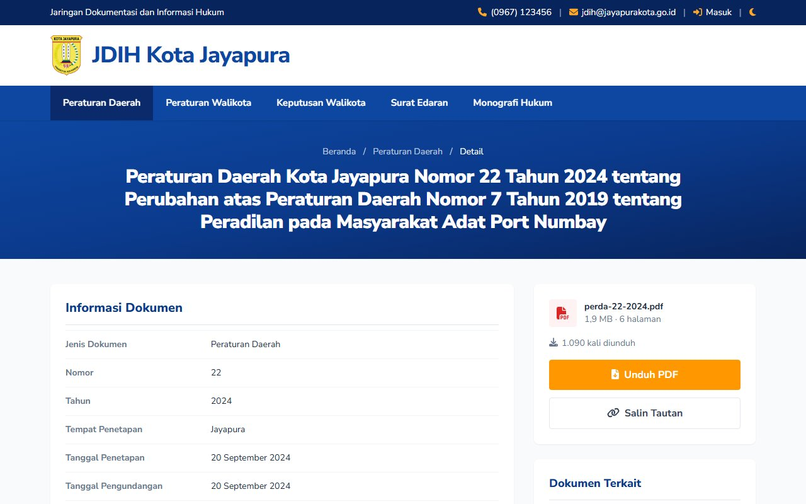
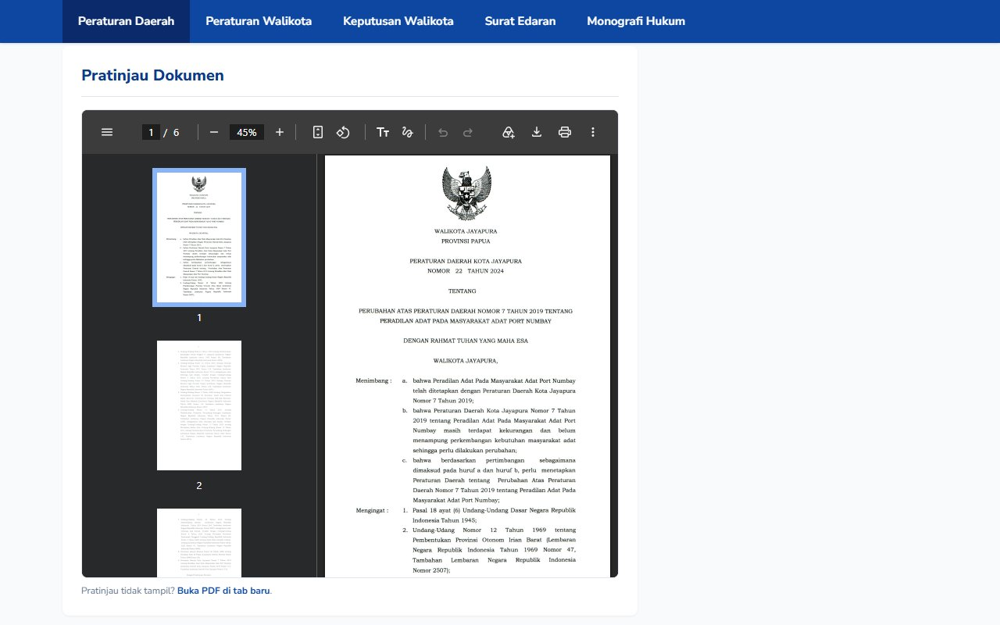
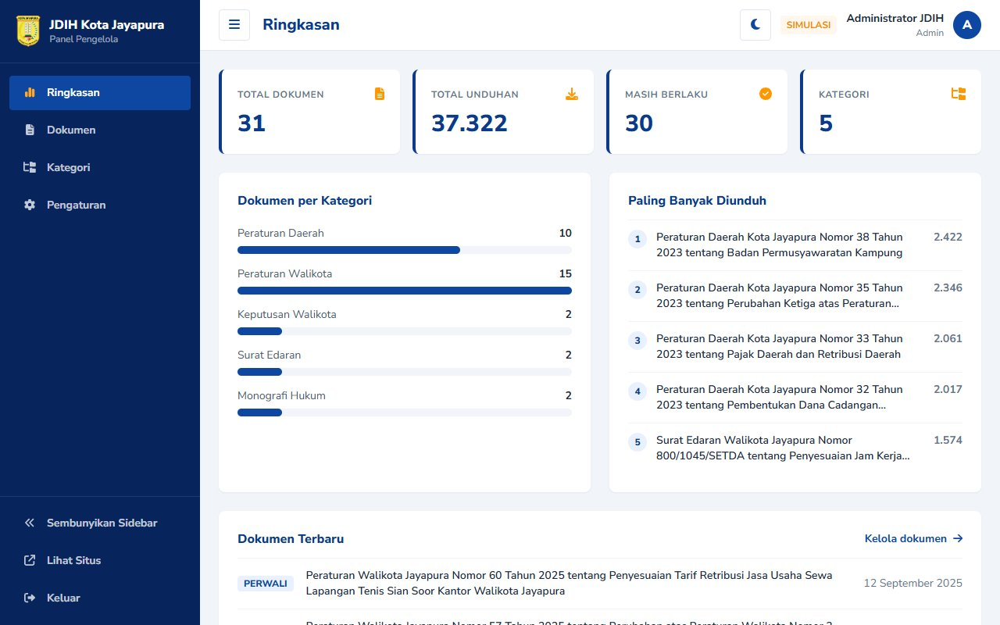
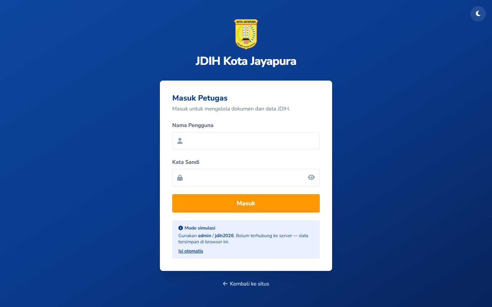
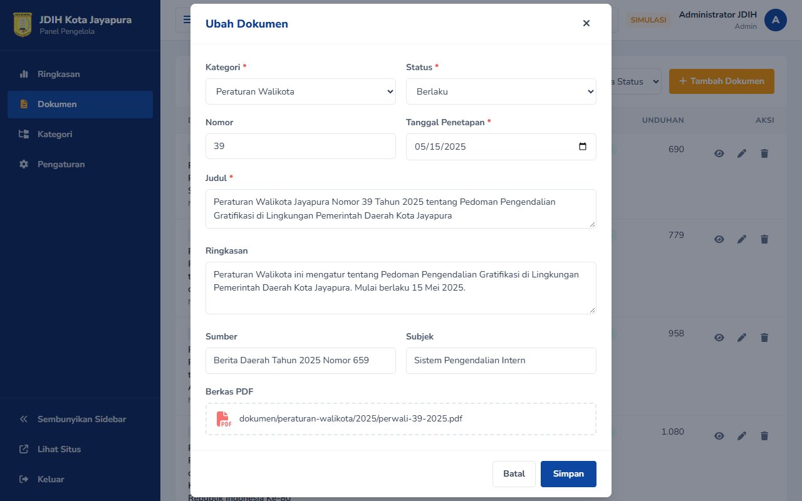
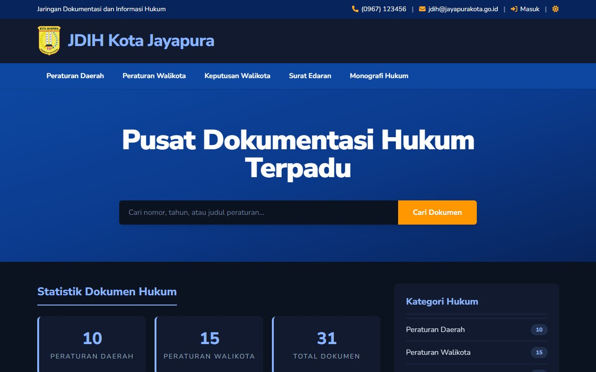
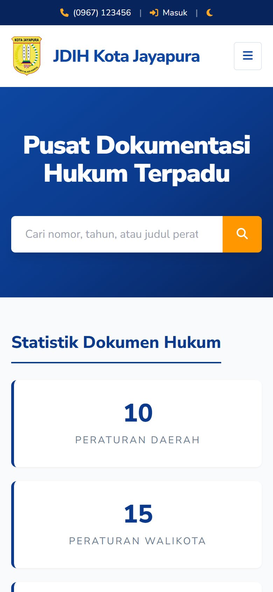
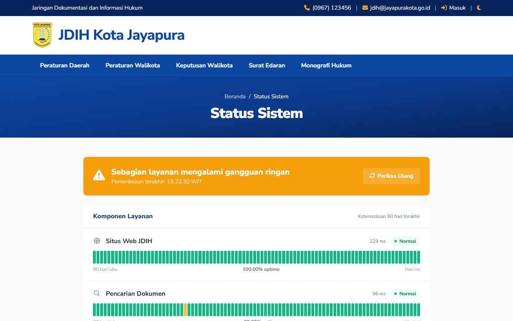

Presentasi Fitur Utama
Pembaruan Website JDIH Kota Jayapura
Prototype portal Jaringan Dokumentasi dan Informasi Hukum, untuk ditinjau bersama Bagian Hukum Setda Kota Jayapura
Akan aktif di subdomain resmi Pemda
https://jdih.jayapurakota.go.id
Nokensoft · v.1.0 · 26 November 2026

Tampilan beranda prototype
PIC: Janzen Faidiban · 082199558191 · Powered by
Nokensoft.com
1
Empat pembaruan utama
Portal publik yang ringkas
Navigasi hanya kategori dokumen, pencarian di halaman depan
Dokumen hukum asli
25 Perda & Perwali lengkap dengan metadata dan berkas PDF
Panel pengelola
Petugas mengelola dokumen, kategori, dan kontak tanpa coding
Nyaman & transparan
Mode gelap, tampilan ponsel, status sistem, kebijakan privasi
PIC: Janzen Faidiban · 082199558191 · Powered by
Nokensoft.com
2
Beranda langsung ke inti
Cari dokumen
Nomor, tahun, judul, atau subjek dari kolom pencarian utama
Statistik otomatis
Jumlah dokumen dihitung langsung dari data, tanpa diisi manual
Dokumen terbaru
Empat peraturan terakhir dan daftar kategori di sisi kanan
Warna dan tata letak mengikuti mockup konsep awal yang telah disepakati
PIC: Janzen Faidiban · 082199558191 · Powered by
Nokensoft.com
3
Navigasi cukup lima kategori

Halaman daftar Peraturan Daerah
Menu = kategori
Perda, Perwali, Keputusan, Surat Edaran, Monografi
Filter & urutkan
Tahun, status berlaku, terbaru, atau terbanyak diunduh
Status jelas
Label Berlaku, Diubah, atau Dicabut di setiap dokumen
PIC: Janzen Faidiban · 082199558191 · Powered by
Nokensoft.com
4
Setiap dokumen tampil lengkap
Metadata resmi
Tanggal penetapan, pengundangan, Lembaran/Berita Daerah
Abstrak & dasar hukum
Pertimbangan, daftar dasar hukum, dan catatan berlaku
Baca & unduh PDF
Pratinjau langsung di halaman, tanpa aplikasi lain
Relasi peraturan
Mengubah atau diubah dengan peraturan lain


PIC: Janzen Faidiban · 082199558191 · Powered by
Nokensoft.com
5
25 dokumen hukum asli sudah dimuat
25
Dokumen asli dengan berkas PDF
10
Peraturan Daerah 2023–2024
15
Peraturan Walikota 2024–2025
Sumber resmi
Diambil dari JDIH BPK RI (peraturan.bpk.go.id), termasuk abstrak dan dasar hukum
Menunggu dari Bagian Hukum
Keputusan Walikota, Surat Edaran, dan Monografi Hukum belum ada di sumber publik; sementara memakai contoh
PIC: Janzen Faidiban · 082199558191 · Powered by
Nokensoft.com
6
Panel pengelola untuk petugas

Di prototype masih simulasi; versi tayang memakai login & database server
Ringkasan statistik
Tambah, ubah, hapus dokumen
Kategori & urutan menu
Kontak di situs publik
Cadangan data
PIC: Janzen Faidiban · 082199558191 · Powered by
Nokensoft.com
7
Publikasi dokumen dalam tiga langkah
Masuk akun petugas
Halaman login khusus pengelola
Isi formulir dokumen
Jenis, nomor, tanggal, judul, berkas PDF
Simpan, langsung tayang
Dokumen muncul di beranda dan daftar


Formulir ubah dokumen di panel pengelola
PIC: Janzen Faidiban · 082199558191 · Powered by
Nokensoft.com
8
Nyaman di layar mana pun

Mode gelap di layar desktop

Mode terang & gelap
Ikut pengaturan perangkat, bisa diganti satu klik
Siap di ponsel
Menu dan kolom menyesuaikan lebar layar
PIC: Janzen Faidiban · 082199558191 · Powered by
Nokensoft.com
9
Informasi layanan yang terbuka
Status Sistem
Ketersediaan layanan 90 hari dan riwayat gangguan
Prasyarat Penggunaan
Ketentuan memakai dan mengutip dokumen
Kebijakan Privasi
Mengacu UU Nomor 27 Tahun 2022 tentang Pelindungan Data Pribadi

Halaman Status Sistem (data simulasi)
PIC: Janzen Faidiban · 082199558191 · Powered by
Nokensoft.com
10
Potensi pengembangan
Paket saat ini
Minimalis
Rp 25 jt
Portal resmi siap tayang
Termasuk:
Portal 5–10 kategori dokumen
Pencarian & pratinjau PDF
Login admin & operator dinas
Kelola data oleh operator
Responsif & mode gelap
Pemeliharaan 1 tahun
Paket 2
Standar
Rp 50 jt
Layanan informasi aktif
Paket sebelumnya, plus:
Hak akses berjenjang (verifikator)
Log aktivitas petugas
Pencarian isi PDF (OCR)
Permintaan dokumen lewat pesan
Statistik pengunjung riil
Paket 3
Profesional
Rp 100 jt
Terhubung sistem Pemda
Paket sebelumnya, plus:
Relasi & konsolidasi peraturan
API berbagi data ke portal Pemda
Pendampingan teknis operator
Survei kepuasan (IKM)
Backup rutin
Paket 4
Terintegrasi
Rp 300 jt
Ekosistem hukum daerah
Paket sebelumnya, plus:
Chatbot AI otomatis
Aplikasi Android & iOS
Digitalisasi arsip sejak 1993
Email broadcast info terbaru
Pelacakan pembentukan Perda
PIC: Janzen Faidiban · 082199558191 · Powered by
Nokensoft.com
11
Bisa ditempuh bertahap
TA 2026
Minimalis
Portal resmi tayang, dikelola operator dinas
Tahap berikut
Standar
Permintaan dokumen lewat pesan, cari sampai isi PDF
Tahap berikut
Profesional
Berbagi data ke portal Pemda lewat API, operator didampingi
Jangka panjang
Terintegrasi
Chatbot AI, aplikasi seluler, arsip sejak 1993, pelacakan Perda
Nilai paket
Estimasi termasuk PPN. Bila bertahap, nilai disesuaikan dengan pekerjaan yang sudah ada.
Manfaat
Mendukung standar Permenkumham 8/2019 dan penilaian JDIH oleh BPHN.
PIC: Janzen Faidiban · 082199558191 · Powered by
Nokensoft.com
12
Langkah berikutnya
Konfirmasi data
Kontak, alamat, dan teks profil instansi
Serahkan dokumen
Keputusan Walikota, Surat Edaran, Monografi
Bangun server
Database, login nyata, unggah PDF
Tayang di domain
Migrasi ke jdih.jayapurakota.go.id
Pelatihan petugas
Pengelolaan dokumen sehari-hari
Terima kasih
Masukan dari pertemuan ini menjadi dasar versi berikutnya.
PIC: Janzen Faidiban · 082199558191 · Powered by
Nokensoft.com
13